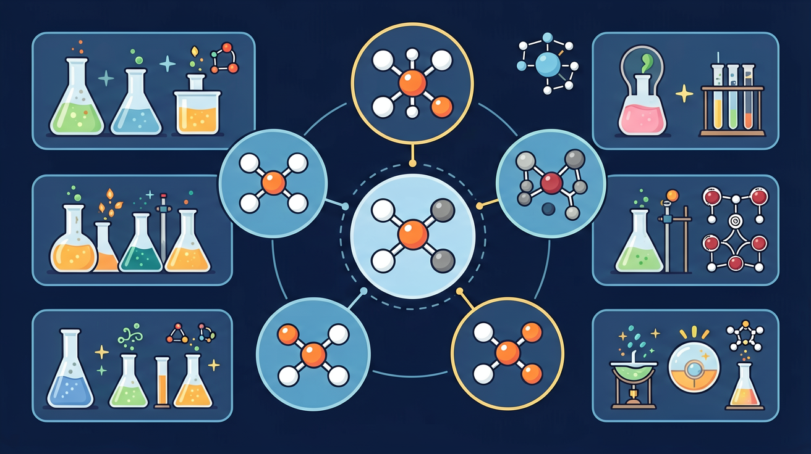

Gallery
v1.1.0 · skill v7.14.0
为什么相同元素种类或相似化学键，也可能因为空间形状不同而性质不同？

先选一个你关心的问题。后面的例子、提示和 AI 学伴都会围绕这个问题来帮你推进。
选择或输入后，本课会围绕你的问题展开。
价层电子对尽可能远离，决定分子立体构型。如甲烷正四面体、水为 V 形、二氧化碳直线形。先写中心原子价层电子对（成键对+孤对），再对应构型名称。键角受孤对排斥更大影响，水的键角小于甲烷。
甲烷分子的空间构型是？
不同原子形成的共价键可能有极性；分子是否极性还看构型是否抵消。CO₂ 键有极性但分子直线对称，整体非极性；H₂O 分子有极性。相似相溶等性质与分子极性相关，但先判断构型。
CO₂ 分子极性如何？
先画路易斯结构满足八隅体，再数电子对数判断立体构型，最后讨论极性与性质。共振与超八隅体是进阶内容，高中先抓住常见分子。练习时每个分子走完“式→电子对→构型→极性”四步。
判断分子极性前通常要先知道？
本课任务：在分子形状模拟中切换孤对电子数目，观察构型与键角变化，完成 CH₄/NH₃/H₂O/CO₂ 对照表。
写清自变量、因变量和至少两个保持不变的条件，避免同时改变多个因素后无法归因。
至少记录三组带单位的数据或三个可复查的现象，不用“变大了”“更明显”代替证据。
用本课公式、粒子模型或受力关系解释趋势，并指出结论成立所依赖的模型条件。
换一个参数或真实情境预测结果，再用仿真检验；若不一致，回查变量、单位和边界条件。
小张发现，家里的塑料瓶在夏天会变得柔软，而冬天则变得坚硬。他好奇这种现象是否与塑料分子的结构有关，于是决定探究分子形状如何影响物质性质。
学生已经知道物质由分子构成，分子间存在相互作用力
分子形状对物质性质的具体影响机制
探究分子形状如何影响塑料的软硬程度
CO₂ 的常见分子构型是？
分子的极性取决于键的极性和空间结构：结构对称可使键极性抵消，分子为非极性（如 CO₂、CH₄）；结构不对称则为极性分子（如 H₂O、NH₃）。相似相溶：极性溶质易溶于极性溶剂。分子间还存在范德华力与氢键，影响熔沸点。
判断分子极性：画出或回忆立体结构，看正负电荷中心是否重合。解释熔沸点：氢键＞较大范德华力；组成结构相似时相对分子质量大、熔沸点高。
常见误区：常见误区是有极性键就一定是极性分子。CO₂ 有极性键但分子对称，整体非极性。
下列分子为极性分子的是？
记忆锚点：分子极性两步看：先看键是否偏，再看形状能不能抵消。
易错提醒：常见错误：看到极性键就直接判断分子极性。CO₂ 有极性键，但分子直线对称，整体非极性。
理解分子极性判断方法，掌握从键极性和空间结构分析物质溶解性、熔沸点等性质的科学思维
CO₂分子直线对称结构使其键极性抵消（偶极矩为0），而H₂O分子V型结构导致极性叠加（偶极矩1.85D），通过偶极矩测定实验证明分子极性差异
先分析各化学键极性，再判断分子空间对称性，最后根据矢量叠加原理综合判断分子极性
误认为含极性键的分子一定是极性分子（如CCl4含极性键但因对称结构整体非极性）
课堂任务：请用“现象/文本/地图/实验数据 → 关键证据 → 学科解释 → 迁移应用”四步，重写一个关于「分子结构与性质：形状怎样改变物质表现？」的新问题。
不要只看结论。动手改变变量后，再用一句话解释画面为什么变了。
拖动浓度、体积或溶质参数，观察颜色深浅和浓度变化。注意：仿真负责“看见变量”，计算仍要回到本课公式。
H₂O 分子整体有极性的主要原因是？
识别并写出本节核心定义、公式或分类标准。
把本课标准用于一个实验数据或真实生活场景。
设计一个反例，说明常见错误为什么站不住脚。
如果你能解释“为什么相同元素种类或相似化学键，也可能因为空间形状不同而性质不同？”，这节课就真正过关了。